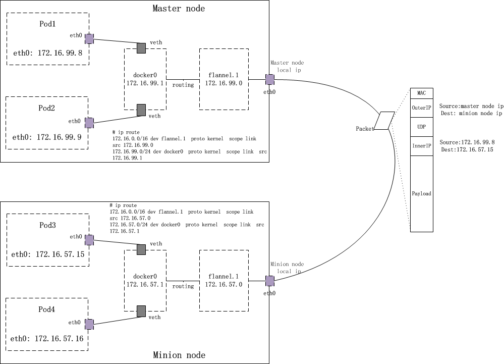

Flannel网络
Table of Contents
Kubernetes 支持 Flannel 、 Calico 、 Weave network等多种 cni 网络Drivers，但由于学习过程使用的是第一个cluster的Flannel网络，这里的网络原理只针对k8s+Flannel网络
环境+提示
凡涉及到Docker、Kubernetes这类正在开发的开源项目的文章，随着K8s以及flannel的演化，本文中的一些说法可能不再正确。注意：阅读此类技术文章务必结合 环境
这里使用的环境就是第一次建立k8s cluster的环境：
$ kube-apiserver --version Kubernetes v1.3.7 $ /opt/bin/flanneld -version 0.5.5 $ /opt/bin/etcd -version etcd Version: 3.0.12 Git SHA: 2d1e2e8 Go Version: go1.6.3 Go OS/Arch: linux/amd64
整个集群搭建在 阿里云 上，每个ECS上的OS及kernel版本： Ubuntu 14.04.4 LTS，3.19.0-70-generic
在测试环境，有两个node： master node和一个 minion node。master node参与workload的调度。所以基本可以认为有两个minion node即可
Kubernetes Cluster中的几个 网络
k8s cluster采用的是默认安装，即直接使用了配置脚本中( kubernetes/cluster/ubuntu/config-default.sh )自带的一些参数，比如：
#摘自kubernetes/cluster/ubuntu/config-default.sh export nodes=${nodes:-"root@master_node_ip root@minion_node_ip"} export SERVICE_CLUSTER_IP_RANGE=${SERVICE_CLUSTER_IP_RANGE:-192.168.3.0/24} export FLANNEL_NET=${FLANNEL_NET:-172.16.0.0/16}
从这里能够识别出三个 网络 ：
- node network：承载kubernetes集群中各个 物理 Node(master和minion)通信的网络
- node间通过 本地局域网 （无论是物理的还是虚拟的）通信
- service network：由kubernetes集群中的 Services 所组成的网络
- 每个新创建的service会被分配一个service IP，在当前集群中，这个IP的分配范围是 192.168.3.0/24 。不过这个IP并不 真实 ，更像一个 占位符 并且只有入口流量，所谓的network也是 名不符实 的
- flannel network： 即 Pod 网络，集群中承载各个Pod相互通信的网络
- cluster中各个Pod要实现相互通信，必须走这个网络，无论是在同一node上的Pod还是跨node的Pod。cluster中，flannel net的分配范围是： 172.16.0.0/16
Service network，看 cluster-ip 一列：
$ kubectl get services NAME CLUSTER-IP EXTERNAL-IP PORT(S) AGE index-api 192.168.3.168 <none> 30080/TCP 18d kubernetes 192.168.3.1 <none> 443/TCP 94d my-nginx 192.168.3.179 <nodes> 80/TCP 90d nginx-kit 192.168.3.196 <nodes> 80/TCP 12d rbd-rest-api 192.168.3.22 <none> 8080/TCP 60d
Flannel network，看 IP 那列:
$ kubectl get pod -o wide
NAME READY STATUS RESTARTS AGE IP NODE
my-nginx-2395715568-gpljv 1/1 Running 6 91d 172.16.99.3 {master node ip}
nginx-kit-3872865736-rc8hr 2/2 Running 0 12d 172.16.57.7 {minion node ip}
... ...
平坦的Flannel网络
Kubenetes安装后的网络状态
首先来看看 kube-up.sh 在安装k8s集群时对各个K8s Node都动了什么手脚
修改docker default配置
在ubuntu 14.04下，docker的配置都在 /etc/default/docker 文件中。如果曾经修改过该文件，那么 kube-up.sh 脚本方式安装完kubernetes后，会发现/etc/default/docker已经变样了，只剩下了一行：
#master node: DOCKER_OPTS=" -H tcp://127.0.0.1:4243 -H unix:///var/run/docker.sock --bip=172.16.99.1/24 --mtu=1450" #minion node: DOCKER_OPTS=" -H tcp://127.0.0.1:4243 -H unix:///var/run/docker.sock --bip=172.16.57.1/24 --mtu=1450"
kube-up.sh修改了Docker daemon的 -bip 选项，使得每个节点上docker守护进程为以后启动的容器在 fannel subnet 范围以内分配IP地址
在etcd中初始化flannel网络数据
多个节点上的flanneld依赖一个 etcd集群 来做集中配置服务：
- etcd保证了所有节点上flanned所看到的配置是一致的
- 每个节点上的flanned监听etcd上的数据变化，实时感知集群中node的变化
可以通过 etcdctl 查询到这些配置数据：
#master node: #flannel network配置 $ etcdctl --endpoints http://127.0.0.1:{etcd listen port} get /coreos.com/network/config {"Network":"172.16.0.0/16", "Backend": {"Type": "vxlan"}} $ etcdctl --endpoints http://127.0.0.1:{etcd listen port} ls /coreos.com/network/subnets /coreos.com/network/subnets/172.16.99.0-24 /coreos.com/network/subnets/172.16.57.0-24 #某一node上的flanne subnet和vtep配置 $ etcdctl --endpoints http://127.0.0.1:{etcd listen port} get /coreos.com/network/subnets/172.16.99.0-24 {"PublicIP":"{master node ip}","BackendType":"vxlan","BackendData":{"VtepMAC":"b6:bf:4c:81:cf:3b"}} # minion node: $ etcdctl --endpoints http://127.0.0.1:{etcd listen port} get /coreos.com/network/subnets/172.16.57.0-24 {"PublicIP":"{minion node ip}","BackendType":"vxlan","BackendData":{"VtepMAC":"d6:51:2e:80:5c:69"}}
或用etcd提供的rest api：
$ curl -L http://127.0.0.1:{etcd listen port}/v2/keys/coreos.com/network/config
{"action":"get","node":{"key":"/coreos.com/network/config","value":"{\"Network\":\"172.16.0.0/16\", \"Backend\": {\"Type\": \"vxlan\"}}","modifiedIndex":5,"createdIndex":5}}
启动flanneld
kube-up.sh在每个Kubernetes节点上启动了一个 flanneld 的程序：
$ ps -ef | grep flanneld #master node: root 1151 1 0 2016 ? 00:02:34 /opt/bin/flanneld --etcd-endpoints=http://127.0.0.1:{etcd listen port} --ip-masq --iface={master node ip} # minion node: root 11940 1 0 2016 ? 00:07:05 /opt/bin/flanneld --etcd-endpoints=http://{master node ip}:{etcd listen port} --ip-masq --iface={minion node ip}
一旦flanneld启动，它将从etcd中读取配置，并请求获取一个租约，有效期目前是 24hrs ，并且监视etcd的数据更新。flanneld一旦获取subnet租约、配置完backend，它会将一些信息写入 /run/flannel/subnet.env 文件
#master node： $ cat /run/flannel/subnet.env FLANNEL_NETWORK=172.16.0.0/16 FLANNEL_SUBNET=172.16.99.1/24 FLANNEL_MTU=1450 FLANNEL_IPMASQ=true #minion node: $ cat /run/flannel/subnet.env FLANNEL_NETWORK=172.16.0.0/16 FLANNEL_SUBNET=172.16.57.1/24 FLANNEL_MTU=1450 FLANNEL_IPMASQ=true
flanneld的最大意义在于 根据etcd中存储的全cluster的subnet信息，跨node传输flannel network中的数据包 ，这个后面会详细说明。
创建flannel.1 网络设备、更新路由信息
各个node上的网络设备列表新增一个名为 flannel.1 的类型为 vxlan 的网络设备：
$ ip -d link show #master node: 4: flannel.1: <BROADCAST,MULTICAST,UP,LOWER_UP> mtu 1450 qdisc noqueue state UNKNOWN mode DEFAULT group default link/ether b6:bf:4c:81:cf:3b brd ff:ff:ff:ff:ff:ff promiscuity 0 vxlan id 1 local {master node local ip} dev eth0 port 0 0 nolearning ageing 300 #minion node: 349: flannel.1: <BROADCAST,MULTICAST,UP,LOWER_UP> mtu 1450 qdisc noqueue state UNKNOWN mode DEFAULT group default link/ether d6:51:2e:80:5c:69 brd ff:ff:ff:ff:ff:ff promiscuity 0 vxlan id 1 local {minion node local ip} dev eth0 port 0 0 nolearning ageing 300
从 flannel.1 的设备信息来看，它似乎与 eth0 存在着某种 bind 关系。这是在其他 bridge 、 veth 设备描述信息中所没有的
flannel.1 设备的ip：
#master node: flannel.1 Link encap:Ethernet HWaddr b6:bf:4c:81:cf:3b inet addr:172.16.99.0 Bcast:0.0.0.0 Mask:255.255.0.0 UP BROADCAST RUNNING MULTICAST MTU:1450 Metric:1 RX packets:5993274 errors:0 dropped:0 overruns:0 frame:0 TX packets:5829044 errors:0 dropped:292 overruns:0 carrier:0 collisions:0 txqueuelen:0 RX bytes:1689890445 (1.6 GB) TX bytes:1144725704 (1.1 GB) #minion node: flannel.1 Link encap:Ethernet HWaddr d6:51:2e:80:5c:69 inet addr:172.16.57.0 Bcast:0.0.0.0 Mask:255.255.0.0 UP BROADCAST RUNNING MULTICAST MTU:1450 Metric:1 RX packets:6294640 errors:0 dropped:0 overruns:0 frame:0 TX packets:5755599 errors:0 dropped:25 overruns:0 carrier:0 collisions:0 txqueuelen:0 RX bytes:989362527 (989.3 MB) TX bytes:1861492847 (1.8 GB)
可以看到两个节点上的 flannel.1 的ip与k8s集群为两个节点上分配subnet的ip范围是对应的
下面是两个节点上的当前路由表：
#master node: $ ip route ... ... 172.16.0.0/16 dev flannel.1 proto kernel scope link src 172.16.99.0 172.16.99.0/24 dev docker0 proto kernel scope link src 172.16.99.1 ... ... #minion node: $ ip route ... ... 172.16.0.0/16 dev flannel.1 172.16.57.0/24 dev docker0 proto kernel scope link src 172.16.57.1 ... ...
以上信息将为后续数据包传输分析打下基础
平坦的flannel network
从以上kubernetes和flannel network安装之后获得的网络信息，能看出flannel network是一个 flat network 。在flannel：172.16.0.0/16这个大网下，每个kubernetes节点从中分配一个子网片段(/24)：
#master node： --bip=172.16.99.1/24 #minion node： --bip=172.16.57.1/24 root@node1:~# etcdctl --endpoints http://127.0.0.1:{etcd listen port} ls /coreos.com/network/subnets /coreos.com/network/subnets/172.16.99.0-24 /coreos.com/network/subnets/172.16.57.0-24
用一张图来诠释可能更为直观：
在平坦的flannel network中， 每个pod都会被分配唯一的ip地址，且每个k8s节点的subnet各不重叠 ，没有交集。不过这样的subnet分配模型也有一定弊端，那就是可能存在ip浪费： 一个node上有200多个flannel ip地址(xxx.xxx.xxx.xxx/24)，如果仅仅启动了几个Pod，那么其余ip就处于闲置状态
flannel网络通信原理

如上图所示，来看看从 pod1：172.16.99.8 发出的数据包是如何到达 pod3：172.16.57.15
从Pod出发
由于k8s更改了DOCKEROPTS，显式指定了 -bip ，这个值与分配给该节点上的subnet的范围是一致的。这样一来，docker引擎每次创建一个容器，该容器被分配到的ip都在 flannel subnet 范围内
在Pod1下的某个容器内执行 ping -c 3 172.16.57.15 ，数据包便开始了它在flannel network中的旅程
Pod是Kubernetes调度的基本单元。Pod内的多个容器共享一个 network namespace 。kubernetes在创建pod时，首先先创建 pause 容器，然后再以pause的 network namespace 为基础，创建pod内的其他容器（ -net=container:xxx ），这样pod内的所有容器便共享一个network namespace，这些容器间的访问直接通过localhost即可。比如pod下A容器启动了一个服务，监听8080端口，那么同一个pod下面的另外一个B容器通过访问 localhost:8080 即可访问到A容器下面的那个服务
看一下Pod1中某容器内的路由信息：
$ docker exec ba75f81455c7 ip route default via 172.16.99.1 dev eth0 172.16.99.0/24 dev eth0 proto kernel scope link src 172.16.99.8
目的地址 172.16.57.15 并不在直连网络中，因此数据包通过 default路由 出去。default路由的路由器地址是 172.16.99.1 ，也就是上面的docker0 bridge的IP地址。相当于docker0 bridge以 三层的工作模式 直接接收到来自容器的数据包(而并非从bridge的二层端口接收)
docker0与flannel.1之间的包转发
数据包到达docker0后，docker0的内核栈处理程序发现这个数据包的目的地址是 172.16.57.15 ，并不是真的要送给自己，于是开始为该数据包找下一hop。根据master node上的路由表
#master node： $ ip route ... ... 172.16.0.0/16 dev flannel.1 proto kernel scope link src 172.16.99.0 172.16.99.0/24 dev docker0 proto kernel scope link src 172.16.99.1 ... ...
匹配到 172.16.0.0/16 这条路由！这是一条直连路由，数据包被直接送到 flannel.1 设备上
flannel.1设备以及flanneld的功用
flannel.1是否会重复docker0的套路呢：包不是发给自己，转发数据包？会，也不会
- 会 ：flannel.1肯定要将包转发出去，因为毕竟包不是给自己的（包目的ip是 172.16.57.15 , vxlan设备ip是 172.16.99.0 ）
- 不会 ：flannel.1不会走寻常套路去转发包，因为它是一个 vxlan 类型的设备，也称为 virtual tunnel end point
那么它到底是怎么处理数据包的呢？这里涉及一些Linux内核对vxlan处理的内容
flannel.1收到数据包后，由于自己不是目的地，也要尝试将数据包重新发送出去。数据包沿着网络协议栈向下流动，在二层时需要封二层以太包，填写目的mac地址，这时一般应该发出 arp：”who is 172.16.57.15″ 。但vxlan设备的特殊性就在于 它并没有真正在二层发出这个arp包 ，因为下面的这个内核参数设置：
#master node: $ cat /proc/sys/net/ipv4/neigh/flannel.1/app_solicit 3
而是由linux kernel引发一个 L3 MISS 事件并将arp请求发到 用户空间的flanned 程序
flanned程序收到 L3 MISS 内核事件以及 arp请求(who is 172.16.57.15) 后，并不会向外网发送arp request，而是尝试 从etcd查找该地址匹配的子网的vtep信息 。在前面曾经展示过etcd中Flannel network的配置信息：
#master node: $ etcdctl --endpoints http://127.0.0.1:{etcd listen port} ls /coreos.com/network/subnets /coreos.com/network/subnets/172.16.99.0-24 /coreos.com/network/subnets/172.16.57.0-24 $ curl -L http://127.0.0.1:{etcd listen port}/v2/keys/coreos.com/network/subnets/172.16.57.0-24 {"action":"get","node":{"key":"/coreos.com/network/subnets/172.16.57.0-24","value":"{\"PublicIP\":\"{minion node local ip}\",\"BackendType\":\"vxlan\",\"BackendData\":{\"VtepMAC\":\"d6:51:2e:80:5c:69\"}}","expiration":"2017-01-17T09:46:20.607339725Z","ttl":21496,"modifiedIndex":2275460,"createdIndex":2275460}}
flanneld从etcd中找到了答案：
subnet: 172.16.57.0/24
public ip: {minion node local ip}
VtepMAC: d6:51:2e:80:5c:69
查看minion node上的信息，发现minion node上的flannel.1 设备mac就是 d6:51:2e:80:5c:69 ：
#minion node: $ ip -d link show 349: flannel.1: <BROADCAST,MULTICAST,UP,LOWER_UP> mtu 1450 qdisc noqueue state UNKNOWN mode DEFAULT group default link/ether d6:51:2e:80:5c:69 brd ff:ff:ff:ff:ff:ff promiscuity 0 vxlan id 1 local 10.46.181.146 dev eth0 port 0 0 nolearning ageing 300
接下来，flanned将查询到的信息放入master node的 arp cache 表中：
#master node: $ ip n | grep 172.16.57.15 172.16.57.15 dev flannel.1 lladdr d6:51:2e:80:5c:69 REACHABLE
flanneld完成这项工作后，linux kernel就可以在arp table中找到 172.16.57.15 对应的mac地址并封装二层以太包了
到目前为止，封包如下图：
不过这个封包还不能在物理网络上传输，因为它实际上只是 vxlan tunnel上的packet
kernel的vxlan封包
将上述的packet从master node传输到minion node，需要将上述packet再次封包。这个任务在backend为vxlan的flannel network中由 linux kernel 来完成
flannel.1为vxlan设备，linux kernel可以自动识别，并将上面的packet进行 vxlan封包 处理。在这个封包过程中，kernel需要知道该数据包究竟发到哪个node上去。kernel需要查看当前节点上的 fdb ( forwarding database )以获得上面对端vtep设备（已经从arp table中查到其mac地址：d6:51:2e:80:5c:69）所在的节点地址。如果fdb中没有这个信息，那么kernel会向用户空间的flanned程序发起 L2 MISS 事件。flanneld收到该事件后，会查询etcd，获取该vtep设备对应的node的 Public IP ，并将信息注册到fdb中
这样Kernel就可以顺利查询到该信息并封包了：
#master node: $ bridge fdb show dev flannel.1 | grep d6:51:2e:80:5c:69 d6:51:2e:80:5c:69 dst {minion node local ip} self permanent
由于目标ip是minion node，查找路由表，包应该从master node的 eth0 发出，这样 src ip 和 src mac 地址也就确定了。封好的包示意图如下：
kernel的vxlan拆包
minion node上的eth0接收到上述vxlan包：
- kernel将识别出这是一个vxlan包
- 拆包后将flannel.1 packet转给minion node上的vtep（flannel.1）
- minion node上的flannel.1再将这个数据包转到minion node上的docker0
- docker0传输到Pod3的某个容器里
Pod内到外部网络
pod中除了可以与pod network中的其他pod通信外，还可以访问外部网络，比如：
#master node: $ docker exec ba75f81455c7 ping -c 3 baidu.com PING baidu.com (180.149.132.47): 56 data bytes 64 bytes from 180.149.132.47: icmp_seq=0 ttl=54 time=3.586 ms 64 bytes from 180.149.132.47: icmp_seq=1 ttl=54 time=3.752 ms 64 bytes from 180.149.132.47: icmp_seq=2 ttl=54 time=3.722 ms --- baidu.com ping statistics --- 3 packets transmitted, 3 packets received, 0% packet loss round-trip min/avg/max/stddev = 3.586/3.687/3.752/0.072 m
这个通信与vxlan就没有什么关系了，主要是通过docker引擎在 iptables 的 POSTROUTING chain 中设置的 MASQUERADE 规则
#mastre node: $ iptables -t nat -nL ... ... Chain POSTROUTING (policy ACCEPT) target prot opt source destination MASQUERADE all -- 172.16.99.0/24 0.0.0.0/0
docker 将容器的pod network地址伪装为node ip出去，包回来时再snat回容器的pod network地址 ，这样网络就通了
不真实 的Service网络
每当在k8s集群中创建一个service，k8s集群就会在 -service-cluster-ip-range 的范围内为service分配一个cluster-ip，只是一个 虚拟的ip ，并不真实绑定某个物理网络设备或虚拟网络设备，仅仅存在于 iptables 的规则中：
$ iptables -t nat -nL|grep 192.168.3 Chain KUBE-SERVICES (2 references) target prot opt source destination KUBE-SVC-XGLOHA7QRQ3V22RZ tcp -- 0.0.0.0/0 192.168.3.182 /* kube-system/kubernetes-dashboard: cluster IP */ tcp dpt:80 KUBE-SVC-NPX46M4PTMTKRN6Y tcp -- 0.0.0.0/0 192.168.3.1 /* default/kubernetes:https cluster IP */ tcp dpt:443 KUBE-SVC-AU252PRZZQGOERSG tcp -- 0.0.0.0/0 192.168.3.22 /* default/rbd-rest-api: cluster IP */ tcp dpt:8080 KUBE-SVC-TCOU7JCQXEZGVUNU udp -- 0.0.0.0/0 192.168.3.10 /* kube-system/kube-dns:dns cluster IP */ udp dpt:53 KUBE-SVC-BEPXDJBUHFCSYIC3 tcp -- 0.0.0.0/0 192.168.3.179 /* default/my-nginx: cluster IP */ tcp dpt:80 KUBE-SVC-UQG6736T32JE3S7H tcp -- 0.0.0.0/0 192.168.3.196 /* default/nginx-kit: cluster IP */ tcp dpt:80 KUBE-SVC-ERIFXISQEP7F7OF4 tcp -- 0.0.0.0/0 192.168.3.10 /* kube-system/kube-dns:dns-tcp cluster IP */ tcp dpt:53
可以看到在PREROUTING环节，k8s设置了一个 target: KUBE-SERVICES 。而KUBE-SERVICES下面又设置了许多target，一旦 destination 和 dstport 匹配，就会沿着chain进行处理
比如：在pod网络 curl 192.168.3.22 8080 时，匹配到下面的 KUBE-SVC-AU252PRZZQGOERSG target ：
KUBE-SVC-AU252PRZZQGOERSG tcp -- 0.0.0.0/0 192.168.3.22 /* default/rbd-rest-api: cluster IP */ tcp dpt:8080
沿着target，看到 KUBE-SVC-AU252PRZZQGOERSG 对应的内容如下：
Chain KUBE-SVC-AU252PRZZQGOERSG (1 references) target prot opt source destination KUBE-SEP-I6L4LR53UYF7FORX all -- 0.0.0.0/0 0.0.0.0/0 /* default/rbd-rest-api: */ statistic mode random probability 0.50000000000 KUBE-SEP-LBWOKUH4CUTN7XKH all -- 0.0.0.0/0 0.0.0.0/0 /* default/rbd-rest-api: */ Chain KUBE-SEP-I6L4LR53UYF7FORX (1 references) target prot opt source destination KUBE-MARK-MASQ all -- 172.16.99.6 0.0.0.0/0 /* default/rbd-rest-api: */ DNAT tcp -- 0.0.0.0/0 0.0.0.0/0 /* default/rbd-rest-api: */ tcp to:172.16.99.6:8080 Chain KUBE-SEP-LBWOKUH4CUTN7XKH (1 references) target prot opt source destination KUBE-MARK-MASQ all -- 172.16.99.7 0.0.0.0/0 /* default/rbd-rest-api: */ DNAT tcp -- 0.0.0.0/0 0.0.0.0/0 /* default/rbd-rest-api: */ tcp to:172.16.99.7:8080
请求被按5：5开的比例分发（起到负载均衡的作用）到 KUBE-SEP-I6L4LR53UYF7FORX 和 KUBE-SEP-LBWOKUH4CUTN7XKH ，而这两个chain的处理方式都是一样的，那就是先做mark，然后做 dnat ，将service ip改为pod network中的pod IP，进而请求被实际传输到某个service下面的pod中处理了